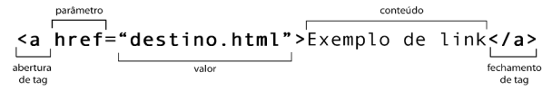
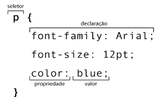

A HTML é uma Linguagem de marcação Hipertexto e as CSS são as folhas de estilo em cascata.
HTML significa Hypertext Markup Language (Linguagem de marcação de texto).
CSS significa Cascading Style Sheets (Folhas de Estilo em Cascata)
A HTML é baseada em marcações chamadas tags, são elas que comandam tudo.
Além disso, o termo “programação” envolve estruturas especializadas que dependem do uso de variáveis simples e compostas, condições, laços e até coisas mais complexas como objetos. Nada disso existe na HTML nem nas CSS.
A HTML trabalha fundamentada apenas nas marcas ou etiquetas (tag) e as CSS em seletores, propriedades e valores.
| HTML | Conteúdo |
| CSS | Estilo |
| Javascript | Interatividade |
Uma tag é um conjunto de palavras entre sinais de colchete angular <>.
Por exemplo, para criar um novo parágrafo simples em html é usado a tag < p > < / p >.
Além disso, as tags podem também ter atributos e valores, que vão configurar seu comportamento:
As configurações das CSS são realizadas através dos seletores.
Anatomia de um seletor
Ao criar um documento HTML, devemos sempre escrever a estrutura básica:

No VS Code, basta apenas digitar ! em um documento html limpo, que ele fará todo o trabalho para você.